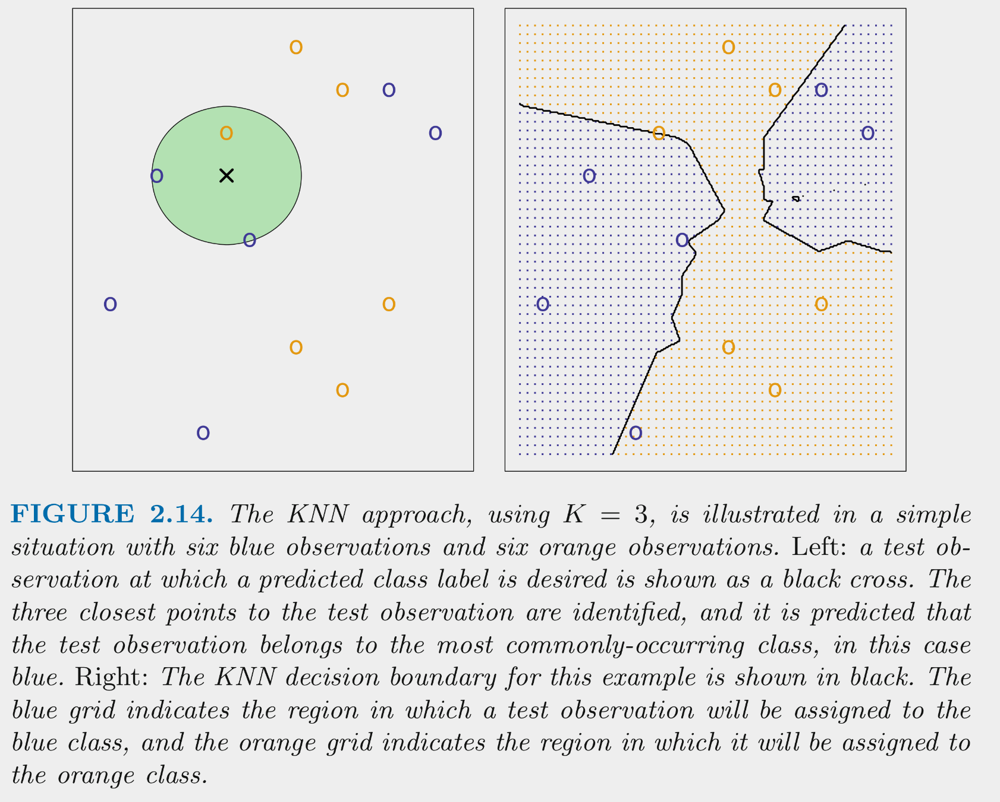
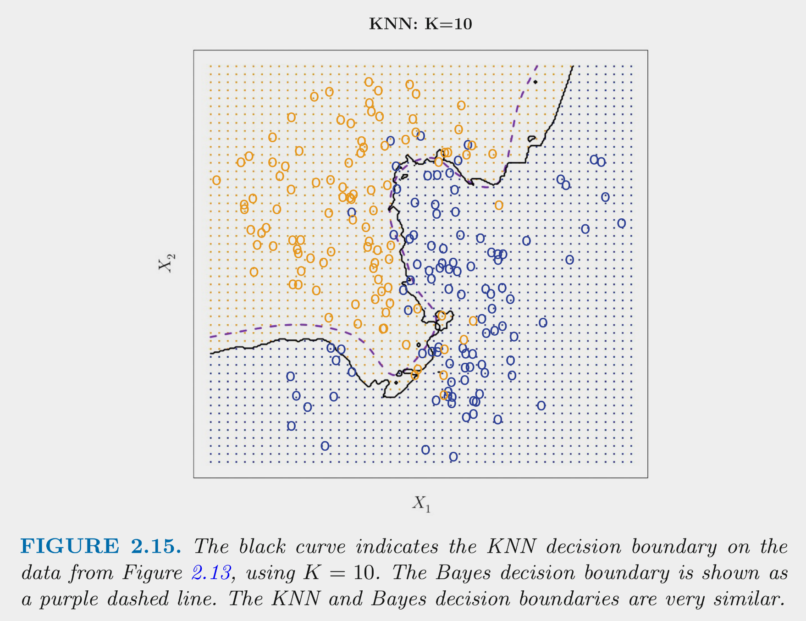

Show Answer
.25 / (1 - .25) = 0.33 or 1:3Post questions to the readings channel in Slack
Post questions to the video-lectures channel in Slack
Post questions to application-assignments Slack Channel
Submit the application assignment here and complete the unit quiz by 8 pm on Wednesday, February 14th
Our eventual goal in this unit is for you to build a machine learning classification model that can accurately predict who lived vs. died on the titanic.
Prior to that, we will work with an example where we classify a car as high or low fuel efficient (i.e., a dichtomous outcome based on miles per gallon) using features engineered from its characteristics
First, lets introduce the Bayes classifier, which is the classifier that will have the lowest error rate of all classifiers using the same set of features.
The figure below displays simulated data for a classification problem for K = 2 classes as a function of X1 and X2

The Bayes classifier assigns each observation its most likely class given its conditional probabilities for the values for X1 and X2
The Bayes classifier provides the minimum error rate for test data
Let’s talk now about some of these classification models
Logistic regression (a special case of the generalized linear model) estimates the conditional probability for each class given X (a specific set of values for our features)
Logistic regression is used frequently for binary and multi-level outcomes because
Logistic regression provides predicted conditional probabilities for one class (positive class) for any specific set of values for our features (X)
\(Pr(positive\:class | X) = \frac{e^{\beta_0 + \beta_1*X_1 + \beta_2*X_2 + ... + \beta_p * X_p}}{1 + e^{\beta_0 + \beta_1*X_1 + \beta_2*X_2 + ... + \beta_p * X_p}}\)
These conditional probabilities are bounded by [0, 1]
To maximize accuracy (as per Bayes classifier),
As a simple parametric model, logistic regression is commonly used for explanatory purposes as well as prediction
For these reasons, it is worthwhile to fully understand how to work with the logistic function to quantify and describe the effects of your features/predictors in terms of
The logistic function yields the probability of the positive class given X
Odds are defined with respect to probabilities as follows:
For example, if the UW Badgers have a .5 probability of winning some upcoming game based on X, their odds of winning are 1 (to 1)
If the UW Badgers have a .75 probability of winning some upcoming game based on X, their odds of winning are 3 (:1; ‘3 to 1’)
The logistic function can be modified to provide odds directly:
Logistic function:
Definition of odds:
Substitute logistic function for \(Pr(positive\:class|X)\) on top and bottom and simplify to get:
The logistic function can be modified further such that the outcome (log-odds/logit) is a linear function of your features
If we take the natural log (base e) of both sides of the odds equation, we get:
Use of logit transformation:
Odds and probability are descriptive but they are not linear functions of X
Log-odds are a linear function of X
The odds ratio addresses these problems
Odds are defined at a specific set of values across the features in your model. For example, with one feature:
The odds ratio describes the change in odds for a change of c units in your feature. With some manipulation:
As an example, if we fit a logistic regression model to predict the probability of the Badgers winning a home football game given the attendance (measured in individual spectators at the game), we might find \(b_1\) (our estimate of \(\beta_1\)) = .000075.
Given this, the odds ratio associated with every increase in 10,000 spectators:
Now, let’s put this all of this together in the Cars dataset from Carnegie Mellon’s StatLib Dataset Archive
Our goal is to build a classifier (machine learning model for a categorical outcome) that classifies cars as either high or low mpg.
Let’s start with some cleaning EDA
mpq and name) that will need to be re-classeddata_all <- read_csv(here::here(path_data, "auto_all.csv"),
col_types = cols())
data_all |> skim_some()| Name | data_all |
| Number of rows | 392 |
| Number of columns | 9 |
| _______________________ | |
| Column type frequency: | |
| character | 2 |
| numeric | 7 |
| ________________________ | |
| Group variables | None |
Variable type: character
| skim_variable | n_missing | complete_rate | min | max | empty | n_unique | whitespace |
|---|---|---|---|---|---|---|---|
| mpg | 0 | 1 | 3 | 4 | 0 | 2 | 0 |
| name | 0 | 1 | 6 | 36 | 0 | 301 | 0 |
Variable type: numeric
| skim_variable | n_missing | complete_rate | p0 | p100 |
|---|---|---|---|---|
| cylinders | 0 | 1 | 3 | 8.0 |
| displacement | 0 | 1 | 68 | 455.0 |
| horsepower | 0 | 1 | 46 | 230.0 |
| weight | 0 | 1 | 1613 | 5140.0 |
| acceleration | 0 | 1 | 8 | 24.8 |
| year | 0 | 1 | 70 | 82.0 |
| origin | 0 | 1 | 1 | 3.0 |
mpg is ordinal, so lets set the levels to indicate the order.origin is a nominal predictor that is coded numeric (where 1 = American, 2 = European, and 3 = Japanese). Let’s recode as character with meaningful labels and then class as a factorname toodata_all <- data_all |>
mutate(mpg = factor(mpg, levels = c("low", "high")),
name = factor(name),
origin = factor (origin),
1 origin = fct_recode(as.character(origin),
"american" = "1",
"european" = "2",
"japanese" = "3")) fct_recode() works on levels stored as characters, so convert 1, 2, 3, to character first.
Now, we can explore responses for categorical variables
name, responses for all other variables are tidyname has many different responsesdata_all |>
select(where(is.factor)) |>
walk(\(column) print(levels(column)))[1] "low" "high"
[1] "american" "european" "japanese"
[1] "amc ambassador brougham"
[2] "amc ambassador dpl"
[3] "amc ambassador sst"
[4] "amc concord"
[5] "amc concord d/l"
[6] "amc concord dl 6"
[7] "amc gremlin"
[8] "amc hornet"
[9] "amc hornet sportabout (sw)"
[10] "amc matador"
[11] "amc matador (sw)"
[12] "amc pacer"
[13] "amc pacer d/l"
[14] "amc rebel sst"
[15] "amc spirit dl"
[16] "audi 100 ls"
[17] "audi 100ls"
[18] "audi 4000"
[19] "audi 5000"
[20] "audi 5000s (diesel)"
[21] "audi fox"
[22] "bmw 2002"
[23] "bmw 320i"
[24] "buick century"
[25] "buick century 350"
[26] "buick century limited"
[27] "buick century luxus (sw)"
[28] "buick century special"
[29] "buick electra 225 custom"
[30] "buick estate wagon (sw)"
[31] "buick lesabre custom"
[32] "buick opel isuzu deluxe"
[33] "buick regal sport coupe (turbo)"
[34] "buick skyhawk"
[35] "buick skylark"
[36] "buick skylark 320"
[37] "buick skylark limited"
[38] "cadillac eldorado"
[39] "cadillac seville"
[40] "capri ii"
[41] "chevroelt chevelle malibu"
[42] "chevrolet bel air"
[43] "chevrolet camaro"
[44] "chevrolet caprice classic"
[45] "chevrolet cavalier"
[46] "chevrolet cavalier 2-door"
[47] "chevrolet cavalier wagon"
[48] "chevrolet chevelle concours (sw)"
[49] "chevrolet chevelle malibu"
[50] "chevrolet chevelle malibu classic"
[51] "chevrolet chevette"
[52] "chevrolet citation"
[53] "chevrolet concours"
[54] "chevrolet impala"
[55] "chevrolet malibu"
[56] "chevrolet malibu classic (sw)"
[57] "chevrolet monte carlo"
[58] "chevrolet monte carlo landau"
[59] "chevrolet monte carlo s"
[60] "chevrolet monza 2+2"
[61] "chevrolet nova"
[62] "chevrolet nova custom"
[63] "chevrolet vega"
[64] "chevrolet vega (sw)"
[65] "chevrolet vega 2300"
[66] "chevrolet woody"
[67] "chevy c10"
[68] "chevy c20"
[69] "chevy s-10"
[70] "chrysler cordoba"
[71] "chrysler lebaron medallion"
[72] "chrysler lebaron salon"
[73] "chrysler lebaron town @ country (sw)"
[74] "chrysler new yorker brougham"
[75] "chrysler newport royal"
[76] "datsun 1200"
[77] "datsun 200-sx"
[78] "datsun 200sx"
[79] "datsun 210"
[80] "datsun 210 mpg"
[81] "datsun 280-zx"
[82] "datsun 310"
[83] "datsun 310 gx"
[84] "datsun 510"
[85] "datsun 510 (sw)"
[86] "datsun 510 hatchback"
[87] "datsun 610"
[88] "datsun 710"
[89] "datsun 810"
[90] "datsun 810 maxima"
[91] "datsun b-210"
[92] "datsun b210"
[93] "datsun b210 gx"
[94] "datsun f-10 hatchback"
[95] "datsun pl510"
[96] "dodge aries se"
[97] "dodge aries wagon (sw)"
[98] "dodge aspen"
[99] "dodge aspen 6"
[100] "dodge aspen se"
[101] "dodge challenger se"
[102] "dodge charger 2.2"
[103] "dodge colt"
[104] "dodge colt (sw)"
[105] "dodge colt hardtop"
[106] "dodge colt hatchback custom"
[107] "dodge colt m/m"
[108] "dodge coronet brougham"
[109] "dodge coronet custom"
[110] "dodge coronet custom (sw)"
[111] "dodge d100"
[112] "dodge d200"
[113] "dodge dart custom"
[114] "dodge diplomat"
[115] "dodge magnum xe"
[116] "dodge monaco (sw)"
[117] "dodge monaco brougham"
[118] "dodge omni"
[119] "dodge rampage"
[120] "dodge st. regis"
[121] "fiat 124 sport coupe"
[122] "fiat 124 tc"
[123] "fiat 124b"
[124] "fiat 128"
[125] "fiat 131"
[126] "fiat strada custom"
[127] "fiat x1.9"
[128] "ford country"
[129] "ford country squire (sw)"
[130] "ford escort 2h"
[131] "ford escort 4w"
[132] "ford f108"
[133] "ford f250"
[134] "ford fairmont"
[135] "ford fairmont (auto)"
[136] "ford fairmont (man)"
[137] "ford fairmont 4"
[138] "ford fairmont futura"
[139] "ford fiesta"
[140] "ford futura"
[141] "ford galaxie 500"
[142] "ford gran torino"
[143] "ford gran torino (sw)"
[144] "ford granada"
[145] "ford granada ghia"
[146] "ford granada gl"
[147] "ford granada l"
[148] "ford ltd"
[149] "ford ltd landau"
[150] "ford maverick"
[151] "ford mustang"
[152] "ford mustang gl"
[153] "ford mustang ii"
[154] "ford mustang ii 2+2"
[155] "ford pinto"
[156] "ford pinto (sw)"
[157] "ford pinto runabout"
[158] "ford ranger"
[159] "ford thunderbird"
[160] "ford torino"
[161] "ford torino 500"
[162] "hi 1200d"
[163] "honda accord"
[164] "honda accord cvcc"
[165] "honda accord lx"
[166] "honda civic"
[167] "honda civic (auto)"
[168] "honda civic 1300"
[169] "honda civic 1500 gl"
[170] "honda civic cvcc"
[171] "honda prelude"
[172] "maxda glc deluxe"
[173] "maxda rx3"
[174] "mazda 626"
[175] "mazda glc"
[176] "mazda glc 4"
[177] "mazda glc custom"
[178] "mazda glc custom l"
[179] "mazda glc deluxe"
[180] "mazda rx-4"
[181] "mazda rx-7 gs"
[182] "mazda rx2 coupe"
[183] "mercedes benz 300d"
[184] "mercedes-benz 240d"
[185] "mercedes-benz 280s"
[186] "mercury capri 2000"
[187] "mercury capri v6"
[188] "mercury cougar brougham"
[189] "mercury grand marquis"
[190] "mercury lynx l"
[191] "mercury marquis"
[192] "mercury marquis brougham"
[193] "mercury monarch"
[194] "mercury monarch ghia"
[195] "mercury zephyr"
[196] "mercury zephyr 6"
[197] "nissan stanza xe"
[198] "oldsmobile cutlass ciera (diesel)"
[199] "oldsmobile cutlass ls"
[200] "oldsmobile cutlass salon brougham"
[201] "oldsmobile cutlass supreme"
[202] "oldsmobile delta 88 royale"
[203] "oldsmobile omega"
[204] "oldsmobile omega brougham"
[205] "oldsmobile starfire sx"
[206] "oldsmobile vista cruiser"
[207] "opel 1900"
[208] "opel manta"
[209] "peugeot 304"
[210] "peugeot 504"
[211] "peugeot 504 (sw)"
[212] "peugeot 505s turbo diesel"
[213] "peugeot 604sl"
[214] "plymouth 'cuda 340"
[215] "plymouth arrow gs"
[216] "plymouth champ"
[217] "plymouth cricket"
[218] "plymouth custom suburb"
[219] "plymouth duster"
[220] "plymouth fury"
[221] "plymouth fury gran sedan"
[222] "plymouth fury iii"
[223] "plymouth grand fury"
[224] "plymouth horizon"
[225] "plymouth horizon 4"
[226] "plymouth horizon miser"
[227] "plymouth horizon tc3"
[228] "plymouth reliant"
[229] "plymouth sapporo"
[230] "plymouth satellite"
[231] "plymouth satellite custom"
[232] "plymouth satellite custom (sw)"
[233] "plymouth satellite sebring"
[234] "plymouth valiant"
[235] "plymouth valiant custom"
[236] "plymouth volare"
[237] "plymouth volare custom"
[238] "plymouth volare premier v8"
[239] "pontiac astro"
[240] "pontiac catalina"
[241] "pontiac catalina brougham"
[242] "pontiac firebird"
[243] "pontiac grand prix"
[244] "pontiac grand prix lj"
[245] "pontiac j2000 se hatchback"
[246] "pontiac lemans v6"
[247] "pontiac phoenix"
[248] "pontiac phoenix lj"
[249] "pontiac safari (sw)"
[250] "pontiac sunbird coupe"
[251] "pontiac ventura sj"
[252] "renault 12 (sw)"
[253] "renault 12tl"
[254] "renault 5 gtl"
[255] "saab 99e"
[256] "saab 99gle"
[257] "saab 99le"
[258] "subaru"
[259] "subaru dl"
[260] "toyota carina"
[261] "toyota celica gt"
[262] "toyota celica gt liftback"
[263] "toyota corolla"
[264] "toyota corolla 1200"
[265] "toyota corolla 1600 (sw)"
[266] "toyota corolla liftback"
[267] "toyota corolla tercel"
[268] "toyota corona"
[269] "toyota corona hardtop"
[270] "toyota corona liftback"
[271] "toyota corona mark ii"
[272] "toyota cressida"
[273] "toyota mark ii"
[274] "toyota starlet"
[275] "toyota tercel"
[276] "toyouta corona mark ii (sw)"
[277] "triumph tr7 coupe"
[278] "vokswagen rabbit"
[279] "volkswagen 1131 deluxe sedan"
[280] "volkswagen 411 (sw)"
[281] "volkswagen dasher"
[282] "volkswagen jetta"
[283] "volkswagen model 111"
[284] "volkswagen rabbit"
[285] "volkswagen rabbit custom"
[286] "volkswagen rabbit custom diesel"
[287] "volkswagen rabbit l"
[288] "volkswagen scirocco"
[289] "volkswagen super beetle"
[290] "volkswagen type 3"
[291] "volvo 144ea"
[292] "volvo 145e (sw)"
[293] "volvo 244dl"
[294] "volvo 245"
[295] "volvo 264gl"
[296] "volvo diesel"
[297] "vw dasher (diesel)"
[298] "vw pickup"
[299] "vw rabbit"
[300] "vw rabbit c (diesel)"
[301] "vw rabbit custom" namedata_all <- data_all |>
select(-name)Finally, let’s make and save our training and validation sets. If we were doing model building for prediction we would also need a test set but we will focus this unit on just selecting the best model but not rigorously evaluating it.
mpgset.seed(20110522)
splits <- data_all |>
initial_split(prop = .75, strata = "mpg")
splits |>
analysis() |>
glimpse() |>
write_csv(here::here(path_data, "auto_trn.csv"))Rows: 294
Columns: 8
$ mpg <fct> high, high, high, high, high, high, high, high, high, hig…
$ cylinders <dbl> 4, 4, 4, 4, 4, 4, 4, 4, 4, 4, 4, 4, 4, 4, 4, 4, 4, 4, 4, …
$ displacement <dbl> 113.0, 97.0, 97.0, 110.0, 107.0, 104.0, 121.0, 97.0, 140.…
$ horsepower <dbl> 95, 88, 46, 87, 90, 95, 113, 88, 90, 95, 86, 90, 70, 76, …
$ weight <dbl> 2372, 2130, 1835, 2672, 2430, 2375, 2234, 2130, 2264, 222…
$ acceleration <dbl> 15.0, 14.5, 20.5, 17.5, 14.5, 17.5, 12.5, 14.5, 15.5, 14.…
$ year <dbl> 70, 70, 70, 70, 70, 70, 70, 71, 71, 71, 71, 71, 71, 71, 7…
$ origin <fct> japanese, japanese, european, european, european, europea…splits |>
assessment() |>
glimpse() |>
write_csv(here::here(path_data, "auto_val.csv"))Rows: 98
Columns: 8
$ mpg <fct> low, low, low, low, low, low, low, low, low, low, low, lo…
$ cylinders <dbl> 8, 8, 8, 8, 8, 6, 6, 6, 6, 8, 8, 4, 4, 4, 8, 8, 8, 4, 8, …
$ displacement <dbl> 350, 304, 302, 440, 455, 198, 200, 225, 250, 400, 318, 14…
$ horsepower <dbl> 165, 150, 140, 215, 225, 95, 85, 105, 100, 175, 150, 72, …
$ weight <dbl> 3693, 3433, 3449, 4312, 4425, 2833, 2587, 3439, 3329, 446…
$ acceleration <dbl> 11.5, 12.0, 10.5, 8.5, 10.0, 15.5, 16.0, 15.5, 15.5, 11.5…
$ year <dbl> 70, 70, 70, 70, 70, 70, 70, 71, 71, 71, 71, 71, 71, 72, 7…
$ origin <fct> american, american, american, american, american, america…Let’s do some quick modeling EDA to get a sense of the data.
class_cars <- function(d) {
d |>
mutate(mpg = factor(mpg, levels = c("low", "high")),
origin = factor (origin))
}data_trn <- read_csv(here::here(path_data, "auto_trn.csv"),
col_type = cols()) |>
class_cars() |>
glimpse()Rows: 294
Columns: 8
$ mpg <fct> high, high, high, high, high, high, high, high, high, hig…
$ cylinders <dbl> 4, 4, 4, 4, 4, 4, 4, 4, 4, 4, 4, 4, 4, 4, 4, 4, 4, 4, 4, …
$ displacement <dbl> 113.0, 97.0, 97.0, 110.0, 107.0, 104.0, 121.0, 97.0, 140.…
$ horsepower <dbl> 95, 88, 46, 87, 90, 95, 113, 88, 90, 95, 86, 90, 70, 76, …
$ weight <dbl> 2372, 2130, 1835, 2672, 2430, 2375, 2234, 2130, 2264, 222…
$ acceleration <dbl> 15.0, 14.5, 20.5, 17.5, 14.5, 17.5, 12.5, 14.5, 15.5, 14.…
$ year <dbl> 70, 70, 70, 70, 70, 70, 70, 71, 71, 71, 71, 71, 71, 71, 7…
$ origin <fct> japanese, japanese, european, european, european, europea…data_trn |> plot_bar("mpg")
mpg) box/violin plots for numeric predictorsdata_trn |>
select(where(is.numeric)) |>
names() |>
map(\(name) plot_grouped_box_violin(df = data_trn, x = "mpg", y = name)) |>
cowplot::plot_grid(plotlist = _, ncol = 2)
data_trn |>
plot_grouped_barplot_percent(x = "origin", y = "mpg")
data_trn |>
plot_grouped_barplot_percent(x = "mpg", y = "origin")
cylinders, displacement, horsepower, and weight are all essentially the same construct (big, beefy car!)mpgdata_trn |>
1 mutate(mpg_high = if_else(mpg == "high", 1, 0),
origin_japan = if_else(origin == "japanese", 1, 0),
origin_europe = if_else(origin == "european", 1, 0)) |>
2 select(-origin, -mpg) |>
cor() |>
corrplot::corrplot.mixed() origin and mpg after converting to dummy-coded features

Now that we understand our data a little better, let’s build some models
Let’s also try to simultaneously pretend that we:
year - Are we more likely to have efficient cars more recently because of improvements in “technology”, above and beyond broad car characteristics (e.g., the easy stuff like weight, displacement, etc.)To be clear, prediction and explanation goals are often separate (though prediction is an important foundation explanation)
Either way, we need a validation set
data_val <- read_csv(here::here(path_data, "auto_val.csv"),
col_type = cols()) |>
class_cars() |>
glimpse()Rows: 98
Columns: 8
$ mpg <fct> low, low, low, low, low, low, low, low, low, low, low, lo…
$ cylinders <dbl> 8, 8, 8, 8, 8, 6, 6, 6, 6, 8, 8, 4, 4, 4, 8, 8, 8, 4, 8, …
$ displacement <dbl> 350, 304, 302, 440, 455, 198, 200, 225, 250, 400, 318, 14…
$ horsepower <dbl> 165, 150, 140, 215, 225, 95, 85, 105, 100, 175, 150, 72, …
$ weight <dbl> 3693, 3433, 3449, 4312, 4425, 2833, 2587, 3439, 3329, 446…
$ acceleration <dbl> 11.5, 12.0, 10.5, 8.5, 10.0, 15.5, 16.0, 15.5, 15.5, 11.5…
$ year <dbl> 70, 70, 70, 70, 70, 70, 70, 71, 71, 71, 71, 71, 71, 72, 7…
$ origin <fct> american, american, american, american, american, america…Let’s predict high mpg from car beefiness and year
We likely want to combine the beefy variables into one construct/factor (beef)
data_trn during prep(). These statistics from data_trn will be used to bake()1rec <- recipe(mpg ~ ., data = data_trn) |>
step_pca(cylinders, displacement, horsepower, weight,
options = list(center = TRUE, scale. = TRUE),
num_comp = 1,
2 prefix = "beef_"). now in the recipe to leave all variables in the feature matrix. We can later select the ones we want use for prediction
beef_1
Now, prep() the recipe and bake() some feature for training and validation sets
rec_prep <- rec |>
prep(data_trn)
feat_trn <- rec_prep |>
bake(NULL)
feat_val <- rec_prep |>
bake(data_val)mpg, year, and beef_1 look goodfeat_trn |> skim_all()| Name | feat_trn |
| Number of rows | 294 |
| Number of columns | 5 |
| _______________________ | |
| Column type frequency: | |
| factor | 2 |
| numeric | 3 |
| ________________________ | |
| Group variables | None |
Variable type: factor
| skim_variable | n_missing | complete_rate | n_unique | top_counts |
|---|---|---|---|---|
| origin | 0 | 1 | 3 | ame: 187, jap: 56, eur: 51 |
| mpg | 0 | 1 | 2 | low: 147, hig: 147 |
Variable type: numeric
| skim_variable | n_missing | complete_rate | mean | sd | p0 | p25 | p50 | p75 | p100 | skew | kurtosis |
|---|---|---|---|---|---|---|---|---|---|---|---|
| acceleration | 0 | 1 | 15.54 | 2.64 | 8.00 | 14.00 | 15.50 | 17.0 | 24.80 | 0.24 | 0.58 |
| year | 0 | 1 | 75.94 | 3.68 | 70.00 | 73.00 | 76.00 | 79.0 | 82.00 | 0.03 | -1.17 |
| beef_1 | 0 | 1 | 0.00 | 1.92 | -2.36 | -1.64 | -0.85 | 1.4 | 4.36 | 0.63 | -0.96 |
. in our recipe and our datasets have more columns.
Let’s look at the logistic model and its parameter estimates from train
fit_lr_2 |> tidy()# A tibble: 3 × 5
term estimate std.error statistic p.value
<chr> <dbl> <dbl> <dbl> <dbl>
1 (Intercept) -23.4 5.55 -4.23 2.38e- 5
2 beef_1 -2.49 0.316 -7.87 3.49e-15
3 year 0.292 0.0718 4.07 4.71e- 5
\(Pr(high|(beef, year)) = \frac{e^{b0 + b1*beef + b2*year}}{1 + e^{b0 + b1*beef + b2*year}}\)
Use predict() to get \(Pr(high|year)\) (or predicted class, more on that later) directly from the model for any data
p_high <-
tibble(year = seq(min(feat_val$year), max(feat_val$year), .1),
beef_1 = mean(feat_val$beef_1)) predict() will:
type = "prob"). We will select out the low columnstype = "conf_int")p_high <- p_high |>
bind_cols(predict(fit_lr_2, new_data = p_high, type = "prob")) |>
bind_cols(predict(fit_lr_2, new_data = p_high, type = "conf_int")) |>
select(-.pred_low, -.pred_lower_low, -.pred_upper_low) |>
glimpse()Rows: 121
Columns: 5
$ year <dbl> 70.0, 70.1, 70.2, 70.3, 70.4, 70.5, 70.6, 70.7, 70.8,…
$ beef_1 <dbl> 0.008438869, 0.008438869, 0.008438869, 0.008438869, 0…
$ .pred_high <dbl> 0.04733721, 0.04867270, 0.05004389, 0.05145161, 0.052…
$ .pred_lower_high <dbl> 0.01495325, 0.01557265, 0.01621651, 0.01688572, 0.017…
$ .pred_upper_high <dbl> 0.1398943, 0.1419807, 0.1440989, 0.1462495, 0.1484331…Here is a quick look at the head
p_high |> head()# A tibble: 6 × 5
year beef_1 .pred_high .pred_lower_high .pred_upper_high
<dbl> <dbl> <dbl> <dbl> <dbl>
1 70 0.00844 0.0473 0.0150 0.140
2 70.1 0.00844 0.0487 0.0156 0.142
3 70.2 0.00844 0.0500 0.0162 0.144
4 70.3 0.00844 0.0515 0.0169 0.146
5 70.4 0.00844 0.0529 0.0176 0.148
6 70.5 0.00844 0.0544 0.0183 0.151Can plot this relationship using the predicted probabilities
ggplot() +
geom_point(data = feat_val, aes(x = year, y = as.numeric(mpg) - 1),
position = position_jitter(height = 0.05, width = 0.05)) +
geom_line(data = p_high, mapping = aes(x = year, y = .pred_high)) +
geom_ribbon(data = p_high,
aes(x = year, ymin = .pred_lower_high, ymax = .pred_upper_high),
linetype = 2, alpha = 0.1) +
scale_x_continuous(name = "Production Year (19XX)", breaks = seq(70,82,2)) +
ylab("Pr(High MPG)")
Can plot odds instead of probabilities using odds equation and coefficients from the model
p_high <- p_high |>
mutate(.odds_high = .pred_high / (1 - .pred_high),
.odds_lower_high = .pred_lower_high / (1 - .pred_lower_high),
.odds_upper_high = .pred_upper_high / (1 - .pred_upper_high))p_high |>
ggplot() +
geom_line(mapping = aes(x = year, y = .odds_high)) +
geom_ribbon(aes(x = year, ymin = .odds_lower_high, ymax = .odds_upper_high),
linetype = 2, alpha = 0.1) +
scale_x_continuous(name = "Production Year (19XX)", breaks = seq(70, 82, 2)) +
ylab("Odds(High MPG)")
Odds ratio for year:
Get the parameter estimate/coefficient from the model
exp(get_estimate(fit_lr_2, "year"))[1] 1.33943You can do this for other values of c as well (not really needed here because a 1 year unit makes sense)
exp(10 * get_estimate(fit_lr_2, "year"))[1] 18.58663Testing parameter estimates
tidy() provides z-tests for the parameter estimatesfit_lr_2 |> tidy()# A tibble: 3 × 5
term estimate std.error statistic p.value
<chr> <dbl> <dbl> <dbl> <dbl>
1 (Intercept) -23.4 5.55 -4.23 2.38e- 5
2 beef_1 -2.49 0.316 -7.87 3.49e-15
3 year 0.292 0.0718 4.07 4.71e- 5The preferred test for parameter estimates from logistic regression is the likelihood ratio test
Anova() from the car package (as you learn in 610/710)car::Anova(fit_lr_2$fit, type = 3)Analysis of Deviance Table (Type III tests)
Response: mpg
LR Chisq Df Pr(>Chisq)
beef_1 239.721 1 < 2.2e-16 ***
year 20.317 1 6.562e-06 ***
---
Signif. codes: 0 '***' 0.001 '**' 0.01 '*' 0.05 '.' 0.1 ' ' 1Accuracy is a very common performance metric for classification models
How accurate is our two feature model?
type = "class"We can calculate accuracy in the training set. This may be somewhat overfit and optimistic!
accuracy_vec(feat_trn$mpg, predict(fit_lr_2, feat_trn, type = "class")$.pred_class)[1] 0.9217687And in the validation set (better estimate of performance in new data. Though if we use this set multiple times to select a best configuration, it will become overfit eventually too!)
accuracy_vec(feat_val$mpg, predict(fit_lr_2, feat_val, type = "class")$.pred_class)[1] 0.8877551
You can see some evidence of over-fitting to the training set in that model performance is a bit lower in validation
Let’s take a look at the decision boundary for this model in the validation set
We need a function to plot the decision boundary because we will use it repeatedly to compare decision boundaries across statistical models
plot_decision_boundary <- function(data, model, x_names, y_name, n_points = 100) {
preds <- crossing(X1 = seq(min(data[[x_names[1]]]),
max(data[[x_names[1]]]),
length = n_points),
X2 = seq(min(data[[x_names[2]]]),
max(data[[x_names[2]]]),
length = n_points))
names(preds) <- x_names
preds[[y_name]] <- predict(model, preds)$.pred_class
preds[[y_name]] <- as.numeric(preds[[y_name]])-1
ggplot(data = data,
aes(x = .data[[x_names[1]]],
y = .data[[x_names[2]]],
color = .data[[y_name]])) +
geom_point(size = 2, alpha = .5) +
geom_contour(data = preds,
aes(x = .data[[x_names[1]]],
y = .data[[x_names[2]]],
z = .data[[y_name]]),
color = "black", breaks = .5, linewidth = 2) +
labs(x = x_names[1], y = x_names[2], color = y_name) +
coord_obs_pred()
}Logistic regression produces a linear decision boundary when you consider a scatter plot of the points by the two features.
Here is the decision boundary for this model in both train and validation sets
p_train <- feat_trn |>
plot_decision_boundary(fit_lr_2, x_names = c("year", "beef_1"), y_name = "mpg", n_points = 400)
p_val <- feat_val |>
plot_decision_boundary(fit_lr_2, x_names = c("year", "beef_1"), y_name = "mpg", n_points = 400)
cowplot::plot_grid(p_train, p_val, labels = list("Train", "Validation"), hjust = -1.5)
What if you wanted to try to improve our predictions?
We can compare model performance in validation set to find this best model
Let’s quickly fit another model we might have considered.
beef)beef_1rec_raw <- recipe(mpg ~ ., data = data_trn)
rec_raw_prep <- rec_raw |>
prep(data_trn)
feat_raw_trn <- rec_raw_prep |>
bake(NULL)
feat_raw_val <- rec_raw_prep |>
bake(data_val)Fit PCA features individually + year
fit_lr_raw <-
logistic_reg() |>
set_engine("glm") |>
fit(mpg ~ cylinders + displacement + horsepower + weight + year,
data = feat_raw_trn)Which is the best prediction model?
accuracy_vec(feat_val$mpg, predict(fit_lr_2, feat_val)$.pred_class)[1] 0.8877551accuracy_vec(feat_raw_val$mpg, predict(fit_lr_raw, feat_raw_val)$.pred_class)[1] 0.8673469
The PCA beef model fits best. The model with individual features likely increases overfitting a bit but doesn’t yield a reduction in bias because all the other variables are so highly correlated.
fit_lr_2 is your choice for best model for prediction (at least it is descriptively better)
If you had an explanatory question about year, how would you have chosen between these two tests of year in these two different but all reasonable models
year effect in the full sample? Let’s discuss.car::Anova(fit_lr_2$fit, type = 3)Analysis of Deviance Table (Type III tests)
Response: mpg
LR Chisq Df Pr(>Chisq)
beef_1 239.721 1 < 2.2e-16 ***
year 20.317 1 6.562e-06 ***
---
Signif. codes: 0 '***' 0.001 '**' 0.01 '*' 0.05 '.' 0.1 ' ' 1car::Anova(fit_lr_raw$fit, type = 3)Analysis of Deviance Table (Type III tests)
Response: mpg
LR Chisq Df Pr(>Chisq)
cylinders 0.4199 1 0.51697
displacement 1.3239 1 0.24990
horsepower 6.4414 1 0.01115 *
weight 15.6669 1 7.553e-05 ***
year 27.0895 1 1.942e-07 ***
---
Signif. codes: 0 '***' 0.001 '**' 0.01 '*' 0.05 '.' 0.1 ' ' 1Let’s switch gears to a non-parametric method we already know - KNN.
KNN can be used as a classifier as well as for regression problems
KNN tries to determine conditional class possibilities for any set of features by looking at observed classes for similar values of for these features in the training set
This figure illustrates the application of 3-NN to a small sample training set (N = 12) with 2 predictors

KNN can produce complex decision boundaries
Remember that we can control this bias-variance trade-off with K.
These figures depict the KNN (and Bayes classifier) decision boundaries for the earlier simulated 2 class problem with X1 and X2


You can NOT make the decision about K based on training error
This figure depicts training and test error for simulated data example as function of 1/K
Training error decreases as 1/K increases. At 1 (K=1) training error is 0
Test error shows expected inverted U

Let’s demonstrate KNN using the Cars dataset
beef_1 PCA componentrec <- recipe(mpg ~ ., data = data_trn) |>
step_pca(cylinders, displacement, horsepower, weight,
options = list(center = TRUE, scale. = TRUE),
num_comp = 1, prefix = "beef_") |>
step_scale(year, beef_1)
rec_prep <- rec |>
prep(data = data_trn)
feat_trn <- rec_prep |>
bake(NULL)
feat_val <- rec_prep |>
bake(data_val)Fit models with varying K.
fit_1nn_2 <-
nearest_neighbor(neighbors = 1) |>
set_engine("kknn") |>
1 set_mode("classification") |>
fit(mpg ~ beef_1 + year, data = feat_trn)set_mode("classification")
fit_5nn_2 <-
nearest_neighbor(neighbors = 5) |>
set_engine("kknn") |>
set_mode("classification") |>
fit(mpg ~ beef_1 + year, data = feat_trn)fit_10nn_2 <-
nearest_neighbor(neighbors = 10) |>
set_engine("kknn") |>
set_mode("classification") |>
fit(mpg ~ beef_1 + year, data = feat_trn)fit_20nn_2 <-
nearest_neighbor(neighbors = 20) |>
set_engine("kknn") |>
set_mode("classification") |>
fit(mpg ~ beef_1 + year, data = feat_trn)Of course, training accuracy goes down with decreasing flexibility as k increases
accuracy_vec(feat_trn$mpg, predict(fit_1nn_2, feat_trn)$.pred_class)[1] 1accuracy_vec(feat_trn$mpg, predict(fit_5nn_2, feat_trn)$.pred_class)[1] 0.9489796accuracy_vec(feat_trn$mpg, predict(fit_10nn_2, feat_trn)$.pred_class)[1] 0.9455782accuracy_vec(feat_trn$mpg, predict(fit_20nn_2, feat_trn)$.pred_class)[1] 0.9285714In contrast, validation accuracy first increases and then eventually decreases as k increase.
accuracy_vec(feat_val$mpg, predict(fit_1nn_2, feat_val)$.pred_class)[1] 0.8163265accuracy_vec(feat_val$mpg, predict(fit_5nn_2, feat_val)$.pred_class)[1] 0.877551accuracy_vec(feat_val$mpg, predict(fit_10nn_2, feat_val)$.pred_class)[1] 0.8877551accuracy_vec(feat_val$mpg, predict(fit_20nn_2, feat_val)$.pred_class)[1] 0.8673469Let’s look at the decision boundaries for 10-NN in training and validation sets
p_train <- feat_trn |>
plot_decision_boundary(fit_10nn_2, x_names = c("year", "beef_1"), y_name = "mpg")
p_val <- feat_val |>
plot_decision_boundary(fit_10nn_2, x_names = c("year", "beef_1"), y_name = "mpg")
cowplot::plot_grid(p_train, p_val, labels = list("Train", "Validation"), hjust = -1.5)
Plot of probability of high_mpg by year, holding beef_1 constant at its mean based on 10-NN
predict() returns probabilities for high and low.p_high <-
tibble(year = seq(min(feat_val$year), max(feat_val$year), .1),
beef_1 = mean(feat_val$beef_1))
p_high <- p_high |>
bind_cols(predict(fit_10nn_2, p_high, type = "prob")) |>
glimpse()Rows: 33
Columns: 4
$ year <dbl> 18.99759, 19.09759, 19.19759, 19.29759, 19.39759, 19.49759,…
$ beef_1 <dbl> 0.004400185, 0.004400185, 0.004400185, 0.004400185, 0.00440…
$ .pred_low <dbl> 0.96, 0.99, 0.99, 0.99, 0.97, 0.87, 0.81, 0.81, 0.81, 0.81,…
$ .pred_high <dbl> 0.04, 0.01, 0.01, 0.01, 0.03, 0.13, 0.19, 0.19, 0.19, 0.19,…ggplot() +
geom_point(data = feat_val, aes(x = year, y = as.numeric(mpg) - 1),
position = position_jitter(height = 0.05, width = 0.05)) +
geom_line(data = p_high, mapping = aes(x = year, y = .pred_high)) +
scale_x_continuous(name = "Production Year (19XX)",
breaks = seq(0, 1, length.out = 7),
labels = as.character(seq(70, 82, length.out = 7))) +
ylab("Pr(High MPG)")
LDA models the distributions of the Xs separately for each class
Then uses Bayes theorem to estimate \(Pr(Y = k | X)\) for each k and assigns the observation to the class with the highest probability
\(Pr(Y = k|X) = \frac{\pi_k * f_k(X)}{\sum_{l = 1}^{K} f_l(X)}\)
where
With a single feature, the probability of any class k, given X is:
\(Pr(Y = k|X) = \frac{\pi_k \frac{1}{\sqrt{2\pi\sigma}}\exp(-\frac{1}{2\sigma^2}(x-\mu_k)^2)}{\sum_{l=1}^{K}\pi_l\frac{1}{2\sigma^2}\exp(-\frac{1}{2\sigma^2}(x-\mu_l)^2)}\)
LDA is a parametric model, but is it interpretable?
Application of LDA to Cars data set with two predictors
Notice that LDA produces linear decision boundary (see James et al. (2023) for formula for discriminant function derived from the probability function on last slide)
rec <- recipe(mpg ~ ., data = data_trn) |>
step_pca(cylinders, displacement, horsepower, weight,
options = list(center = TRUE, scale. = TRUE),
num_comp = 1,
prefix = "beef_")
rec_prep <- rec |>
prep(data_trn)
feat_trn <- rec_prep |>
bake(NULL)
feat_val <- rec_prep |>
bake(data_val)discrm packagelibrary(discrim, exclude = "smoothness")
discrim_linear() |>
set_engine("MASS") |>
translate()Linear Discriminant Model Specification (classification)
Computational engine: MASS
Model fit template:
MASS::lda(formula = missing_arg(), data = missing_arg())Fit the LDA in train
fit_lda_2 <-
discrim_linear() |>
set_engine("MASS") |>
fit(mpg ~ beef_1 + year, data = feat_trn)Accuracy and decision boundary
accuracy_vec(feat_val$mpg, predict(fit_lda_2, feat_val)$.pred_class)[1] 0.8469388p_train <- feat_trn |>
plot_decision_boundary(fit_lda_2, x_names = c("year", "beef_1"), y_name = "mpg", n_points = 400)
p_val <- feat_val |>
plot_decision_boundary(fit_lda_2, x_names = c("year", "beef_1"), y_name = "mpg", n_points = 400)
cowplot::plot_grid(p_train, p_val, labels = list("Train", "Validation"), hjust = -1.5)
QDA relaxes one restrictive assumption of LDA
Application of RDA (Regularized Discriminant Analysis) algorithm to Car data set with two features
rda() from the klaR packagefrac_common_cov and frac_identity, that can each vary between 0 - 1
frac_common_cov = 1 and frac_identity = 0, this is an LDAfrac_common_cov = 0 and frac_identity = 0, this is a QDAHere is a true QDA using frac_common_cov = 1 and frac_identity = 0
discrim_regularized(frac_common_cov = 0, frac_identity = 0) |>
set_engine("klaR") |>
translate()Regularized Discriminant Model Specification (classification)
Main Arguments:
frac_common_cov = 0
frac_identity = 0
Computational engine: klaR
Model fit template:
klaR::rda(formula = missing_arg(), data = missing_arg(), lambda = 0,
gamma = 0)fit_qda_2 <-
discrim_regularized(frac_common_cov = 0, frac_identity = 0) |>
set_engine("klaR") |>
fit(mpg ~ beef_1 + year, data = feat_trn)Accuracy and decision boundary
accuracy_vec(feat_val$mpg,
predict(fit_qda_2, feat_val)$.pred_class)[1] 0.877551p_train <- feat_trn |>
plot_decision_boundary(fit_qda_2, x_names = c("year", "beef_1"), y_name = "mpg", n_points = 400)
p_val <- feat_val |>
plot_decision_boundary(fit_qda_2, x_names = c("year", "beef_1"), y_name = "mpg", n_points = 400)
cowplot::plot_grid(p_train, p_val, labels = list("Train", "Validation"), hjust = -1.5)
Both logistic and LDA are linear functions of X and therefore produce linear decision boundaries
LDA makes additional assumptions about X (multivariate normal and common \(\sum\)) beyond logistic regression. Relative performance is based on the quality of this assumption
QDA relaxes the LDA assumption about common \(\sum\) (and RDA can relax it partially)
Both QDA and LDA assume multivariate normal X so may not accommodate categorical predictors very well. Logistic and KNN do accommodate categorical predictors
KNN is non-parametric and therefore the most flexible
Logistic regression fails when classes are perfectly separated (but does that ever happen?) and is less stable when classes are well separated
LDA, KNN, and QDA naturally accommodate more than two classes
Logistic regression requires relatively large sample sizes. LDA may perform better with smaller sample sizes if assumptions are met
The Cars dataset had strong predictors and a mostly linear decision boundary for the two predictors we considered
mlbench package (lots of cool datasets for ML)This will also demonstrate the power of tidymodels to allow us to fit many different statistical algorithms which all have their own syntax using a common syntax provided by tidymodels.
library(mlbench, include.only = "mlbench.circle")
set.seed(20140102)
data_trn <- as_tibble(mlbench.circle(200)) |>
rename(x_1 = x.1, x_2 = x.2) |>
glimpse()Rows: 200
Columns: 3
$ x_1 <dbl> -0.514721263, 0.763312056, 0.312073042, 0.162981535, -0.320294…
$ x_2 <dbl> 0.47513532, 0.65803777, -0.89824011, 0.38680494, -0.47313964, …
$ classes <fct> 1, 2, 2, 1, 1, 1, 1, 2, 2, 1, 2, 2, 1, 1, 1, 2, 2, 2, 2, 2, 2,…test <- as_tibble(mlbench.circle(200)) |>
rename(x_1 = x.1, x_2 = x.2)data_trn |> ggplot(aes(x = x_1, y = x_2, color = classes)) +
geom_point(size = 2, alpha = .5)
fit_lr_bench <-
logistic_reg() |>
set_engine("glm") |>
fit(classes ~ x_1 + x_2, data = data_trn)accuracy_vec(test$classes,
predict(fit_lr_bench, test)$.pred_class)[1] 0.62p_train <- data_trn |>
plot_decision_boundary(fit_lr_bench, x_names = c("x_1", "x_2"), y_name = "classes", n_points = 400) +
coord_obs_pred()Coordinate system already present. Adding new coordinate system, which will
replace the existing one.p_test <- test |>
plot_decision_boundary(fit_lr_bench, x_names = c("x_1", "x_2"), y_name = "classes", n_points = 400) +
coord_obs_pred()Coordinate system already present. Adding new coordinate system, which will
replace the existing one.cowplot::plot_grid(p_train, p_test, labels = list("Train", "Test"), hjust = -1.5)
fit_knn_bench <-
nearest_neighbor() |>
set_engine("kknn") |>
set_mode("classification") |>
fit(classes ~ x_1 + x_2, data = data_trn)accuracy_vec(test$classes,
predict(fit_knn_bench, test)$.pred_class)[1] 0.985p_train <- data_trn |>
plot_decision_boundary(fit_knn_bench, x_names = c("x_1", "x_2"), y_name = "classes", n_points = 400) +
coord_obs_pred()Coordinate system already present. Adding new coordinate system, which will
replace the existing one.p_test <- test |>
plot_decision_boundary(fit_knn_bench, x_names = c("x_1", "x_2"), y_name = "classes", n_points = 400) +
coord_obs_pred()Coordinate system already present. Adding new coordinate system, which will
replace the existing one.cowplot::plot_grid(p_train, p_test, labels = list("Train", "Test"), hjust = -1.5)
fit_lda_bench <-
discrim_linear() |>
set_engine("MASS") |>
fit(classes ~ x_1 + x_2, data = data_trn)accuracy_vec(test$classes,
predict(fit_lda_bench, test)$.pred_class)[1] 0.62p_train <- data_trn |>
plot_decision_boundary(fit_lda_bench, x_names = c("x_1", "x_2"), y_name = "classes", n_points = 400) +
coord_obs_pred()Coordinate system already present. Adding new coordinate system, which will
replace the existing one.p_test <- test |>
plot_decision_boundary(fit_lda_bench, x_names = c("x_1", "x_2"), y_name = "classes", n_points = 400) +
coord_obs_pred()Coordinate system already present. Adding new coordinate system, which will
replace the existing one.cowplot::plot_grid(p_train, p_test, labels = list("Train", "Test"), hjust = -1.5)
rda() select optimal hyperparameter valuesfit_rda_bench <-
discrim_regularized() |>
set_engine("klaR") |>
fit(classes ~ x_1 + x_2, data = data_trn)accuracy_vec(test$classes,
predict(fit_rda_bench, test)$.pred_class)[1] 0.985p_train <- data_trn |>
plot_decision_boundary(fit_rda_bench, x_names = c("x_1", "x_2"), y_name = "classes", n_points = 400) +
coord_obs_pred()Coordinate system already present. Adding new coordinate system, which will
replace the existing one.p_test <- test |>
plot_decision_boundary(fit_rda_bench, x_names = c("x_1", "x_2"), y_name = "classes", n_points = 400) +
coord_obs_pred()Coordinate system already present. Adding new coordinate system, which will
replace the existing one.cowplot::plot_grid(p_train, p_test, labels = list("Train", "Test"), hjust = -1.5)
The Naïve Bayes classifier is a simple probabilistic classifier which is based on Bayes theorem
But, we assume that the predictor variables are conditionally independent of one another given the response value
This algorithm can be fit with either klaR or naivebayes engines
There are many tutorials available on this classifier
Fit it
fit_bayes_bench <-
naive_Bayes() |>
set_engine("naivebayes") |>
fit(classes ~ x_1 + x_2, data = data_trn)accuracy_vec(test$classes,
predict(fit_bayes_bench, test)$.pred_class)[1] 0.99p_train <- data_trn |>
plot_decision_boundary(fit_bayes_bench, x_names = c("x_1", "x_2"), y_name = "classes", n_points = 400) +
coord_obs_pred()Coordinate system already present. Adding new coordinate system, which will
replace the existing one.p_test <- test |>
plot_decision_boundary(fit_bayes_bench, x_names = c("x_1", "x_2"), y_name = "classes", n_points = 400) +
coord_obs_pred()Coordinate system already present. Adding new coordinate system, which will
replace the existing one.cowplot::plot_grid(p_train, p_test, labels = list("Train", "Test"), hjust = -1.5)
Random Forest is a variant of decision trees
It uses bagging which involves resampling the data to produce many trees and then aggregating across trees for the final classification
We will discuss Random Forest in a later unit
Here we fit it with defaults for its hyperparameters
Fit it
fit_rf_bench <-
rand_forest() |>
set_engine("ranger") |>
set_mode("classification") |>
fit(classes ~ x_1 + x_2, data = data_trn)accuracy_vec(test$classes,
predict(fit_rf_bench, test)$.pred_class)[1] 0.985p_train <- data_trn |>
plot_decision_boundary(fit_rf_bench, x_names = c("x_1", "x_2"), y_name = "classes", n_points = 400) +
coord_obs_pred()Coordinate system already present. Adding new coordinate system, which will
replace the existing one.p_test <- test |>
plot_decision_boundary(fit_rf_bench, x_names = c("x_1", "x_2"), y_name = "classes", n_points = 400) +
coord_obs_pred()Coordinate system already present. Adding new coordinate system, which will
replace the existing one.cowplot::plot_grid(p_train, p_test, labels = list("Train", "Test"), hjust = -1.5)
It is easy to fit a single layer neural network
read_csv(here::here(path_data, "lunch_004.csv")) |>
print_kbl()Rows: 23 Columns: 2
── Column specification ────────────────────────────────────────────────────────
Delimiter: ","
chr (1): name
dbl (1): acc_test
ℹ Use `spec()` to retrieve the full column specification for this data.
ℹ Specify the column types or set `show_col_types = FALSE` to quiet this message.| name | acc_test |
|---|---|
| rf | 0.80 |
| wang | 0.80 |
| Phipps | 0.80 |
| dong | 0.79 |
| li | 0.79 |
| jiang | 0.78 |
| Shea | 0.77 |
| simental | 0.77 |
| cherry | 0.77 |
| crosby | 0.77 |
| NA | 0.77 |
| NA | 0.76 |
| NA | 0.73 |
| NA | 0.73 |
| NA | 0.72 |
| NA | 0.71 |
| NA | 0.71 |
| NA | 0.69 |
| NA | 0.68 |
| NA | 0.68 |
| NA | 0.68 |
| NA | 0.66 |
| NA | NA |
Logistic regression models DGP condition probabilities using logistic function
LDA uses Bayes theorem to estimate condition probability
\(Pr(Y = k|X) = \frac{\pi_k * f_k(X)}{\sum_{l = 1}^{K} f_l(X)}\)
where
QDA relaxes one restrictive assumption of LDA
KNN works similar to regression
x1 and x2) using MASS packageset.seed(5433)
means <- c(0, 0)
sigma <- diag(2) * 100
data_trn <- MASS::mvrnorm(n = 300, mu = means, Sigma = sigma) |>
magrittr::set_colnames(str_c("x", 1:length(means))) |>
as_tibble()
data_val <- MASS::mvrnorm(n = 3000, mu = means, Sigma = sigma) |>
magrittr::set_colnames(str_c("x", 1:length(means))) |>
as_tibble()x1 and x2b <- c(0, 0, 0, .5)
calc_p <- function(x, b){
exp(b[1] + b[2]*x$x1 + b[3]*x$x2 + b[4]*x$x1*x$x2) /
(1 + exp(b[1] + b[2]*x$x1 + b[3]*x$x2 + b[4]*x$x1*x$x2))
}data_trn <- data_trn |>
mutate(p = calc_p(data_trn, b)) |>
mutate(y = rbinom(nrow(data_trn), 1, p),
y = factor(y, levels = 0:1, labels = c("neg", "pos")))
head(data_trn, 10)# A tibble: 10 × 4
x1 x2 p y
<dbl> <dbl> <dbl> <fct>
1 9.85 -5.53 1.52e-12 neg
2 -2.48 5.64 9.21e- 4 neg
3 -4.74 -13.7 1.00e+ 0 pos
4 -7.02 12.6 6.09e-20 neg
5 0.942 -3.48 1.63e- 1 pos
6 0.151 2.78 5.52e- 1 neg
7 7.74 -6.84 3.24e-12 neg
8 -4.85 -10.1 1.00e+ 0 pos
9 -0.937 2.03 2.78e- 1 neg
10 -16.5 6.08 1.83e-22 neg data_val <- data_val |>
mutate(p = calc_p(data_val, b)) |>
mutate(y = rbinom(nrow(data_val), 1, p),
y = factor(y, levels = 0:1, labels = c("neg", "pos")))data_val |>
ggplot(mapping = aes(x = x1, y = x2, color = y)) +
geom_point(size = 2, alpha = .5)
fit_lda <-
discrim_linear() |>
set_engine("MASS") |>
fit(y ~ x1 + x2, data = data_trn)
fit_lda_int <-
discrim_linear() |>
set_engine("MASS") |>
fit(y ~ x1 + x2 + x1*x2, data = data_trn)
fit_qda <-
discrim_regularized(frac_common_cov = 0, frac_identity = 0) |>
set_engine("klaR") |>
fit(y ~ x1 + x2, data = data_trn)
fit_qda_int <-
discrim_regularized(frac_common_cov = 0, frac_identity = 0) |>
set_engine("klaR") |>
fit(y ~ x1 + x2 + x1*x2, data = data_trn)data_val |>
plot_decision_boundary(fit_lda, x_names = c("x1", "x2"), y_name = "y",
n_points = 400)
data_val |>
plot_decision_boundary(fit_lda_int, x_names = c("x1", "x2"), y_name = "y",
n_points = 400) 
data_val |>
plot_decision_boundary(fit_qda, x_names = c("x1", "x2"), y_name = "y",
n_points = 400)
data_val |>
plot_decision_boundary(fit_qda_int, x_names = c("x1", "x2"), y_name = "y",
n_points = 400) 
PCA


{kind=link}